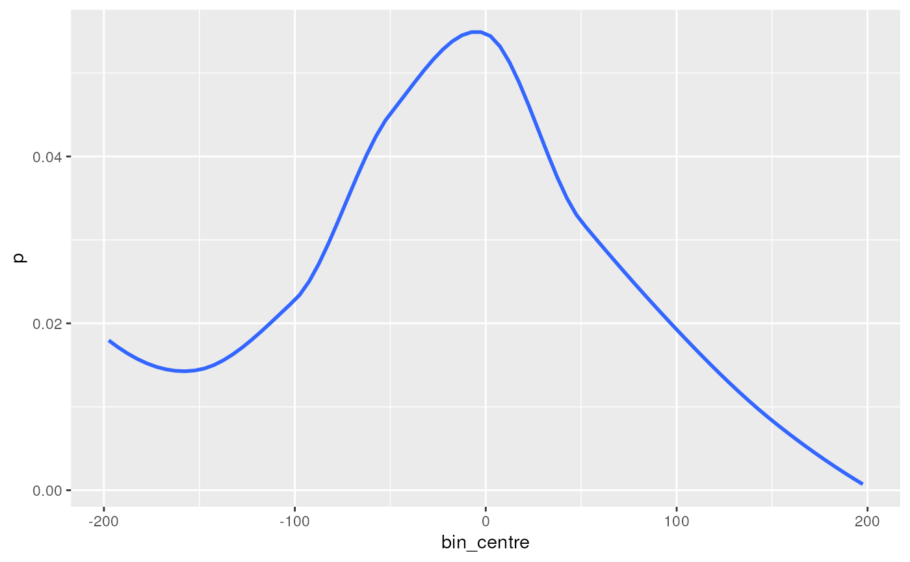
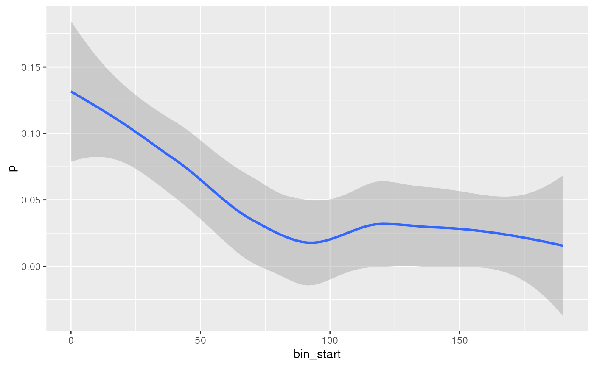
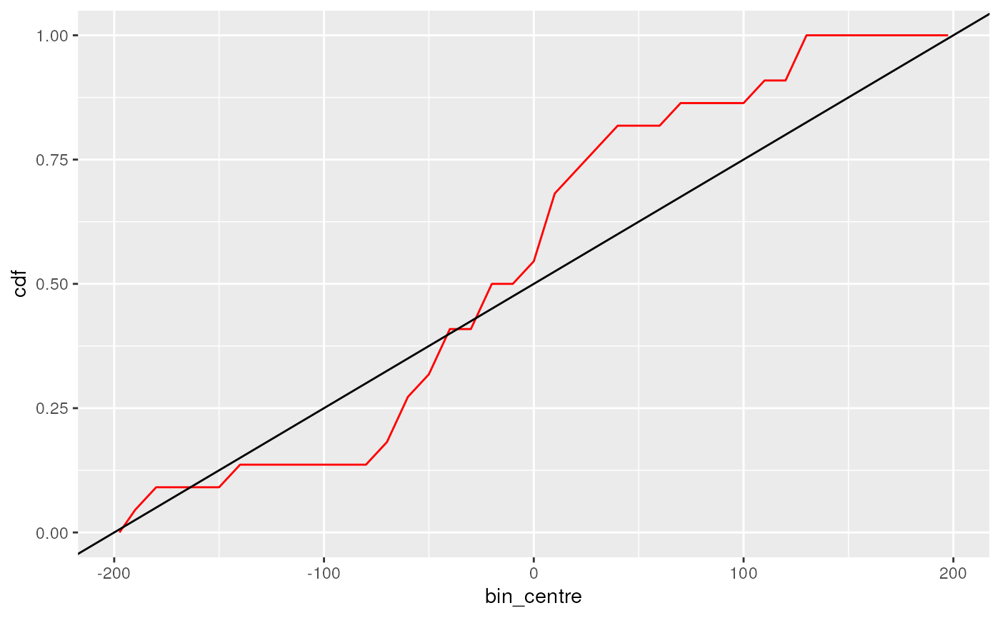

Plot the distribution of motif matches across sequences
Arguments
- matches
Output from getPwmMatches
- binwidth
Width of bins to use when plotting
- abs
logical(1) Plot absolute distances from centre
- use_totals
logical(1). If TRUE, plots will use total counts. The default (FALSE) plots probabilities.
- type
Plot match density, the CDF or a binned heatmap
- geom
Type of geom to be used for line plots. Ignored for heatmaps
- cluster
logical(1) Cluster motifs when drawing a heatmap. If TRUE a dendrogram will be added to the LHS of the plot
- w
Relative width of the dendrogram on (0, 1)
- heat_fill
scale_fill_continuous object for heatmaps. If not provided, scale_fill_viridis_c() will be added to the heatmap.
- ...
Passed to individual geom* functions
Details
Multiple options are provided for showing the distribution of PWM matches within a set of sequences, using either the smoothed probability density, the probability CDF or as a heatmap. Distances can be shown as symmetrical around the centre or using absolute distances from the central position within the sequences.
Heatmaps are only enabled for comparisons across multiple PWMs, with optional clustering enabled. If adding a dendrogram for clustering, the returned plot object will be a patchwork object.
Examples
## Load the example PWM
data("ex_pfm")
esr1 <- ex_pfm$ESR1
## Load the example sequences from the peaks
data("ar_er_seq")
## Just the best match
bm <- getPwmMatches(esr1, ar_er_seq, best_only = TRUE)
plotMatchPos(bm, se = FALSE)
#> `geom_smooth()` using method = 'loess' and formula = 'y ~ x'

## Matches can also be shown by distance from centre
plotMatchPos(bm, abs = TRUE)
#> `geom_smooth()` using method = 'loess' and formula = 'y ~ x'

## Cumulative Probability plots are also implemented
plotMatchPos(bm, type = "cdf", geom = "line", colour = "red") +
geom_abline(intercept = 0.5, slope = 1/ 400)
